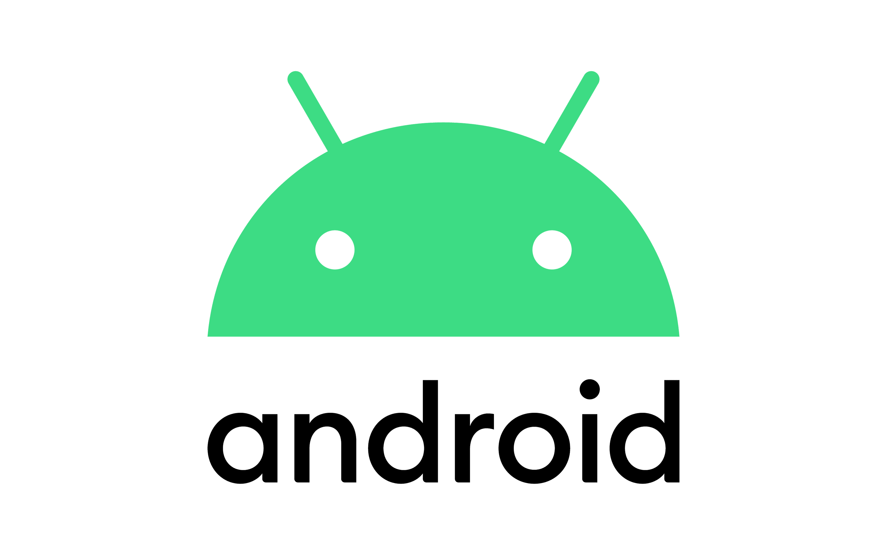

Sistemas Operativos Móviles
TRABAJO DE INVESTIGACIÓN
TRABAJO DE INVESTIGACIÓN
"Los sistemas operativos móviles han experimentado una fascinante evolución, desde los primeros dispositivos móviles hasta los sofisticados smartphones que utilizamos hoy en día. La historia de los sistemas operativos móviles se remonta a principios de la década de 1990, cuando los teléfonos móviles comenzaron a ofrecer funciones más allá de las simples llamadas y mensajes de texto.
Uno de los primeros sistemas operativos móviles fue el Nokia OS, utilizado en los teléfonos de la marca Nokia. Este sistema operativo permitía el acceso a funciones básicas como la agenda, los mensajes y algunos juegos simples. Sin embargo, fue en el año 2000 cuando se produjo un gran avance con la llegada de Symbian OS. Desarrollado por una alianza de empresas líderes en telefonía móvil, Symbian OS se convirtió en el sistema operativo dominante en ese momento y se utilizó en una amplia gama de dispositivos móviles."(De SOUSA, José)
A medida que la tecnología avanzaba, surgieron nuevos sistemas operativos que revolucionaron el panorama móvil. En 2007, Apple lanzó iOS junto con el primer iPhone, marcando un hito con su interfaz táctil intuitiva y su ecosistema de aplicaciones. Poco después, en 2008, Google introdujo Android, un sistema operativo basado en Linux y diseñado para ser altamente personalizable. Android rápidamente ganó popularidad gracias a su adopción por múltiples fabricantes y su modelo de código abierto. Estos sistemas operativos, junto con otros como BlackBerry OS y Windows Phone, definieron una nueva era en la que los dispositivos móviles no solo servían para comunicarse, sino también para acceder a internet, gestionar tareas y disfrutar de un sinfín de aplicaciones.

Evolución de Android
Android ha recorrido un largo camino desde su lanzamiento en 2008, transformándose en el sistema operativo móvil más utilizado en el mundo. Diseñado inicialmente por Android Inc. y adquirido por Google en 2005, Android debutó con la versión 1.0 en el HTC Dream, ofreciendo características básicas como navegador, correo electrónico y acceso a la Android Market (ahora Google Play). A lo largo de los años, cada nueva versión de Android ha traído innovaciones significativas, incluyendo interfaces mejoradas, soporte para hardware avanzado y nuevas capacidades como la multitarea, la personalización profunda y un ecosistema de aplicaciones sin precedentes. Con el paso del tiempo, Android ha optimizado la seguridad, el rendimiento y la compatibilidad, adaptándose a dispositivos de todo tipo, desde teléfonos inteligentes hasta relojes, televisores y automóviles.
Lista de versiones de Android
"Desde la versión 1.0 de Android, el sistema poco a poco fue mejorando su interfaz gráfica y sus funciones. Entre estas estuvieron una actualización del Android Market, soporte de más cuentas de usuario, navegación por GPS, mejor renderización en 3D, entre otros. No hay nuevas características significativas que varíen entre cada versión, pero lo genial del SO es que se adapta perfectamente a cualquier teléfono de la época, es un SO abierto a muchas arquitecturas." (CABALLERO RUEDA, Santiago)
Evolución de iOS
iOS, el sistema operativo móvil desarrollado por Apple, ha sido uno de los pilares de la revolución de los smartphones desde su lanzamiento en 2007 con el iPhone original. Inicialmente conocido como iPhone OS, este sistema operativo introdujo una interfaz táctil innovadora y una integración fluida con el hardware del dispositivo, lo que permitió a los usuarios interactuar con el teléfono de una manera completamente nueva. Con cada nueva versión, Apple ha agregado características avanzadas como la multitarea, la gestión de notificaciones, mejoras en seguridad y privacidad, y una mayor integración con otros dispositivos Apple a través de servicios como iCloud. iOS también ha sido un motor clave en el desarrollo de la App Store, permitiendo a millones de desarrolladores crear aplicaciones para un vasto ecosistema móvil. A lo largo de los años, iOS ha evolucionado para ofrecer una experiencia más personalizada, segura y optimizada, consolidándose como uno de los sistemas operativos más populares y avanzados del mundo.
Lista de versiones de iOS


2. Sistemas Operativos Móviles: ¿Qué son?, Características...